병원 · 의료시설 (진료실)
위생 기준에 맞춘 정밀 관리
 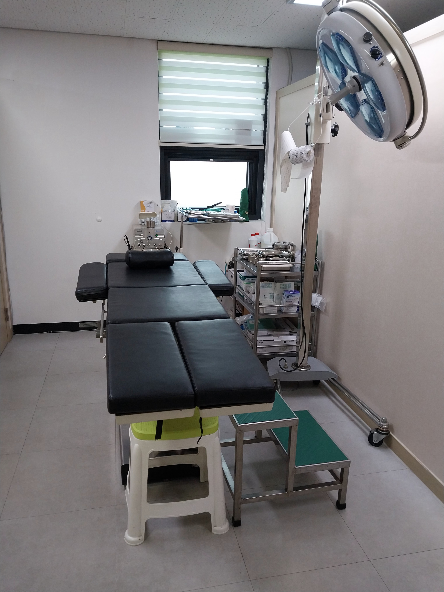
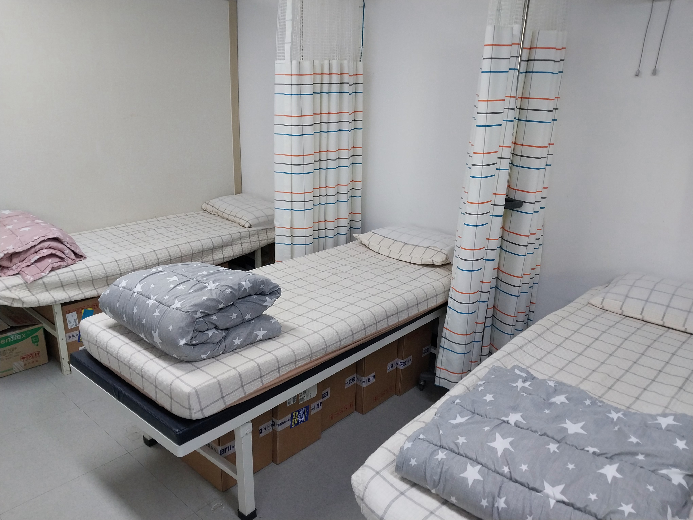
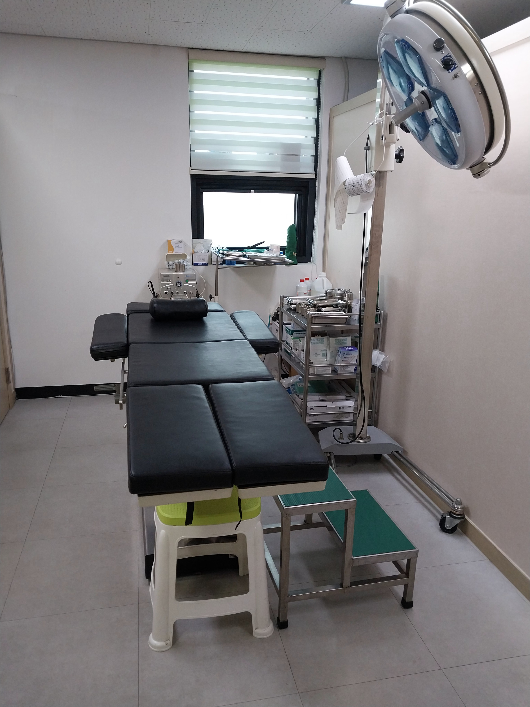
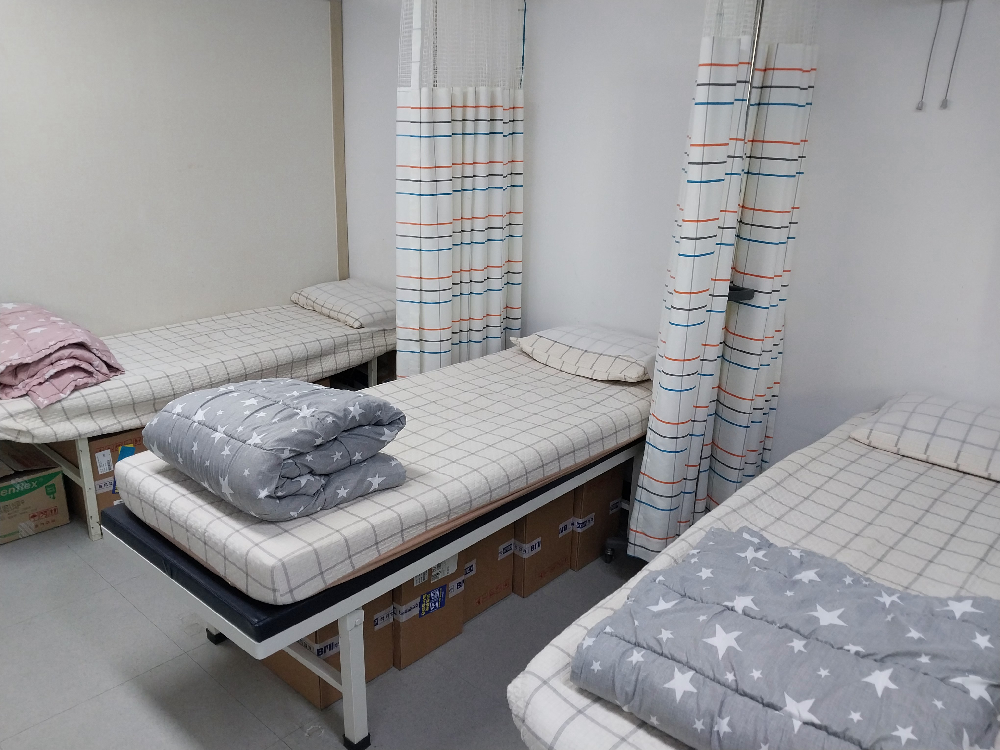
병원 · 사무실 · 물류센터까지 현장 경험으로 검증된 정기 청소 전문팀입니다.
논톡식 관리 · 사후 AS · 걸레 색상 분리 등 눈에 안 보여도 중요한 기본을 지킵니다.
📞 상담 010-2063-9495
다중 이용시설 내 푸드코트 및 상업 주방 청소 사례입니다.
외부 후드뿐 아니라 내부 오염 상태를 확인하고,
정기 관리 관점에서 작업을 진행합니다.
위생 기준에 맞춘 정밀 관리
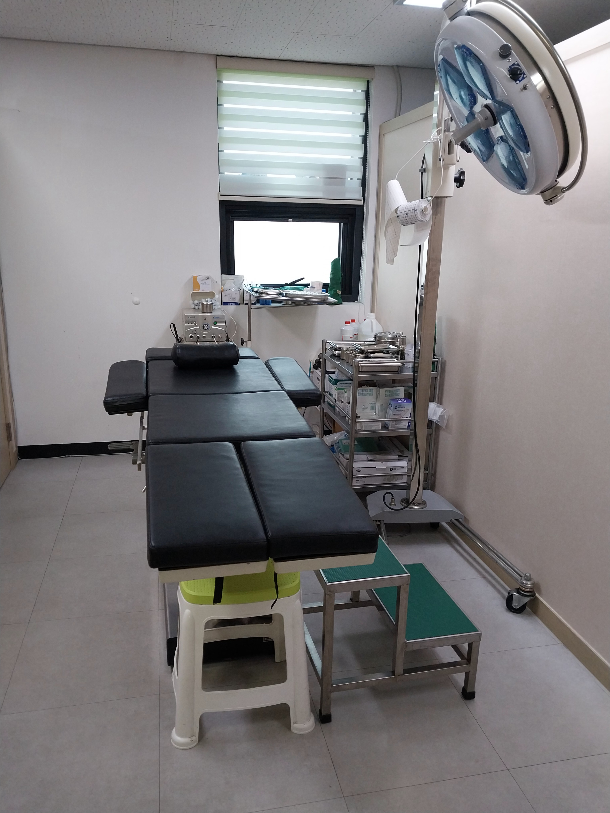
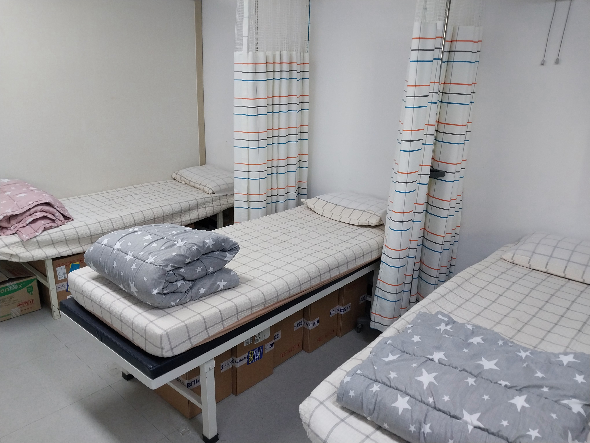
다중 이용 공간 위생 집중 관리
 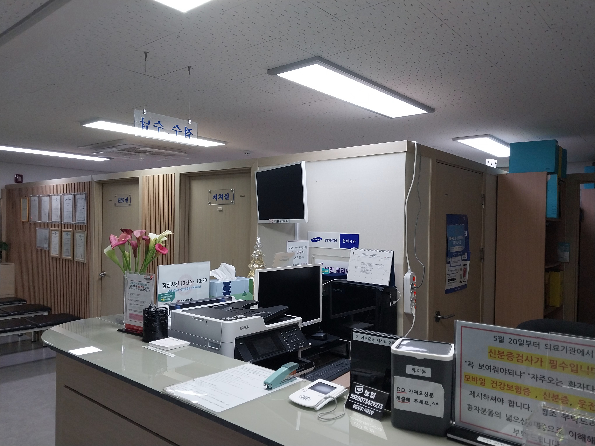
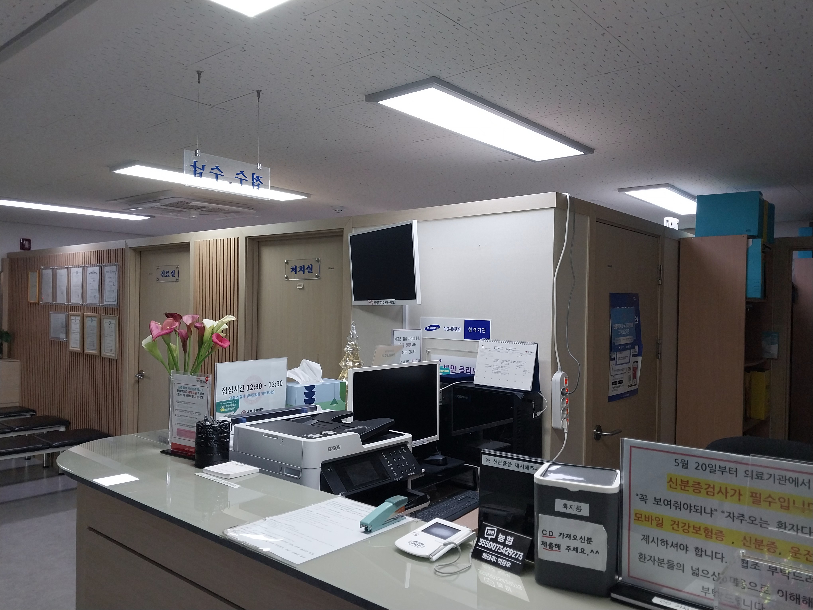
업무 동선 고려한 바닥·공간 관리
 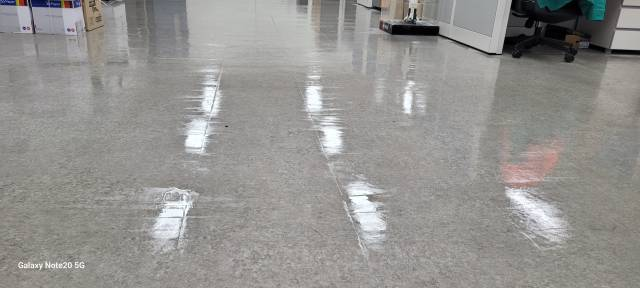
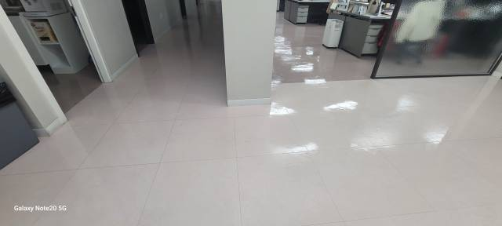
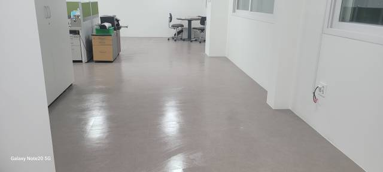
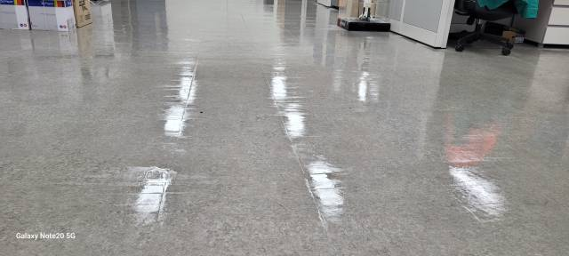
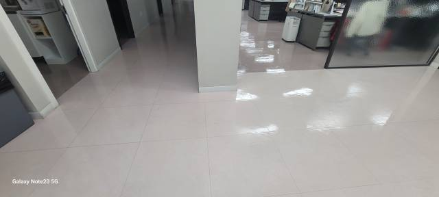
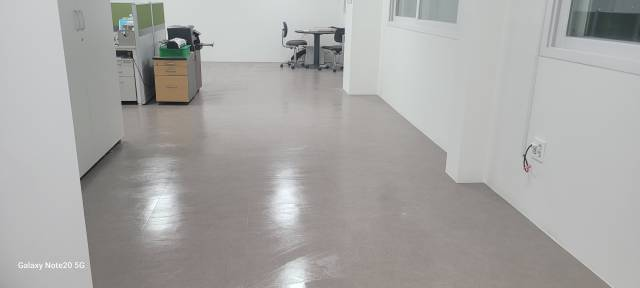
분진·오염 관리 중심 작업


의료 기준에 맞춘 세밀 청소